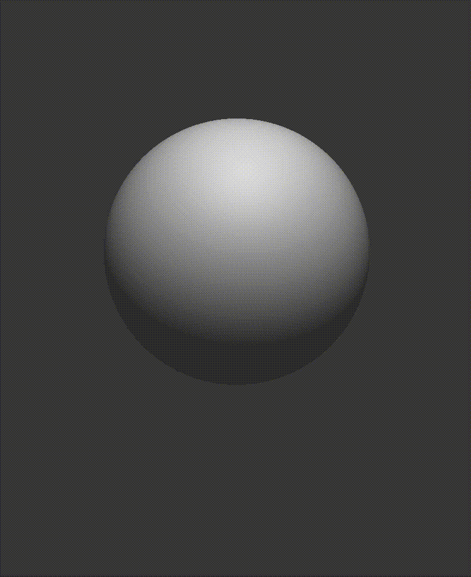
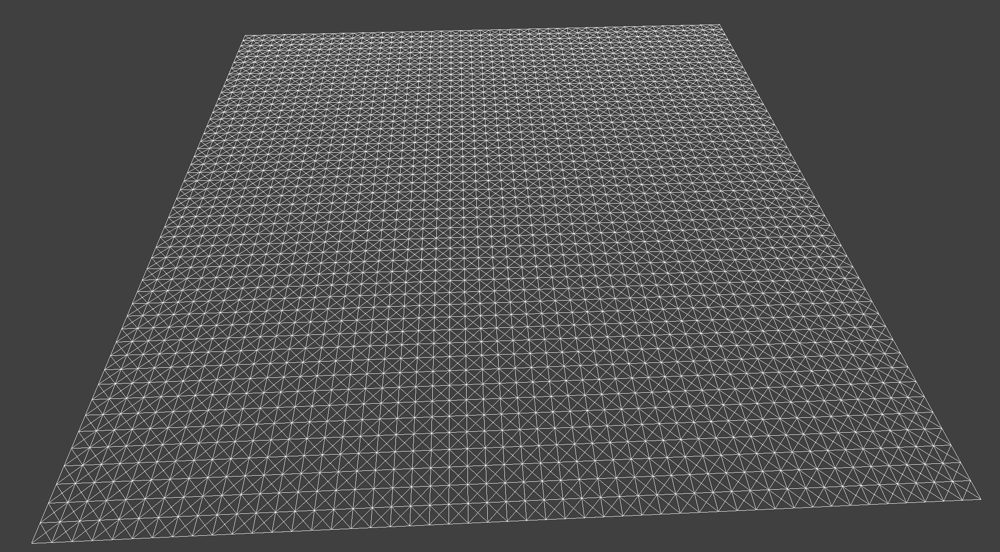
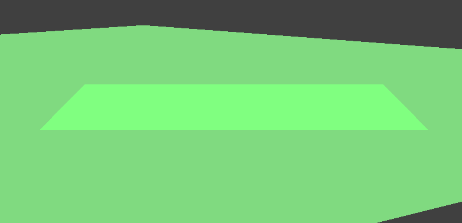

You can view the spec for this project at Assignment 4: Cloth Simulation.
In our C++ cloth simulation project, we implement a physically-based simulation of cloth and sphere objects and planes using a mass-spring system, simulating realistic behavior under forces through numerical integration. We handle collisions with external objects and self-collisions using spatial hashing for efficiency. We also implement advanced rendering techniques including Blinn-Phong shading, texture mapping, bump and displacement mapping, and environment mapping, and a creative bubble effect, in GLSL vertex and fragment shaders.
|  | |
Throughout the history of computer graphics, many different cloth models have been developed for simulation. Of these, one of the simplest models uses a system of point masses and springs. The cloth is essentially a grid of point masses, where each mass is connected to its neighbors by springs. Essentially, we are representing a cloth mesh from point mass vertices and spring edges, with each spring being one of 3 types: structural, shear, and bending.
To do this, we create a Cloth class, where given the height and width and orientation of the cloth, we create point masses and springs. We simply loop in the x and y or z directions (depending on the orientation) and create a point mass at interpolated positions. We then create springs defined by the following rules:
| Cloth Mesh with All Constraints | Cloth Mesh without any SHEARING Constraints |
Cloth Mesh With Only SHEARING Constraints |
|---|---|---|
|  |
To simulate the motion of the spring system that represents the cloth, we need to perform numerical integration to approximate the continuous time differential equations governing the dynamics of the system. To do this, we can discretize the integral.
This first requires computing the forces acting on each pointmass at the given timestep. The force on each pointmass will be the sum of force due to external forces (gravity, etc) and spring correction forces which keep the cloth together. For external forces, the force is just F = ma. For spring corrective forces, the force is F_s = k_s*(||p_a - p_b|| - l), where k_s is the spring constant. We also need to apply an additional 0.2 weight on spring corrective forces corresponding to springs which represent BENDING constraints, since these are weaker than SHEARING or STRUCTURAL constraints.
Next, we need to use the total force computed on each pointmass to perform Verlet integration. The force computed on the point gives the acceleration. This can be used to update the position using the equation:
We only apply this equation to point mass which are not pinned.
Finally, to make deformations realistic at each timestep, we apply an additional constraint on the position of each point mass. We prevent any spring from ever being over 10% of its rest length. This constraint is split between the two point mass if they are both unpinned, otherwise it is applied to the unpinned point mass.
We look at the effect of three different parameters (spring constant ks, density, and damping) on the simulation of the falling of a cloth pinned at each corner.
For the spring constant, we visually see that it changes how tight the springs are, which affects how much the cloth hangs down below the pinned corners. There is also a sense of the other effects of changing the tightness of the material on the process of its fall. We can look at two images for the resting position of two different ks values below:
ks = 1 N/m |
ks = 100,000 N/m |
For density, we see that changing the density value adjusts how strong the falling force is compared to the string correction forces. This makes sense, since the spring correction forces do not scale with mass, but gravity does. This allows us to see that the object with higher density falls more straight down, and also has a lower resting point than a lighter object. We include images of the final resting point of two different density clothes below:
density = 1 g/cm² |
density = 100 g/cm² |
Finally, we look at the damping. The damping changes how much of the energy of the system is attenuated over time. Thus, as we would expect, with a low damping value the system takes a lot longer to come to rest. This manifests in the cloth bouncing up much more and for longer when the damping value is smaller. We visualize the first bounce peak of a small damping value and a damping value of 1 (no bounce, since all energy is lost).
damping = 0.011 |
damping = 1 |
Finally, we can look at the shaded cloth (with surface normals) in the final resting state of the cloth with default parameters.
We need to handle collisions of the cloth with other objects effectively. In this project, we model the behavior of the cloth with planes and spheres. In either case, we need to detect if there is a collision, and then if so, move the pointmass backwards along the direction of its motion such that it is outside the bounds of the object.
For the sphere, we can detect a collision if the pointmass's distance from the center of the sphere is less than the radius of the sphere. We can determine the intersection point by subtracting the center of the sphere from the last_position value, scaling this vector to have length equal to the radius of the sphere, and then finally adding this vector to the origin of the sphere. The correction vector is the difference between this intersection point and the last_position. Finally, we compute the new, adjusted position value by adding the correction vector to last_position, and finally multiplying by (1 - f) to account for friction.
For the plane, the steps are similar. We detect a collision by first computing the distance of last_position and position from the plane, and then checking if the product of these distances are negative. If so, then the point crossed the plane, and thus there was a collision. The tangent point is the position vector minus the distance of position from the plane times the normal vector. We move this tangent point SURFACE_OFFSET in the direction of the normal moving towards where the point mass came from to avoid potential numerical precision issues. Then, we compute the correction vector by taking the difference of this intersection point and last_position. Finally, we add this vector to last_position, and finally multiply by (1 - f) to account for friction.
First, we can look at the behavior of the cloth falling onto a sphere. We can change the spring constant and see how this changes the final resting position and falling dynamics:
ks = 500 N/m |
ks = 5000 N/m |
ks = 50000 N/m |
We can see that as we might expect, the stronger the springs are (higher the spring constant is), the more rigid the cloth is and the less wrinkles appear when it is draped on the sphere.
We can also visualize the collision of the cloth with the plane. It's final resting point is simply laying flat on the plane, as one would expect.

Our cloth can collide with other objects, but it cannot collide with itself. As a result, if we have a scene in which the cloth falls on itself or otherwise folds on itself, the cloth will clip through and behave strangely. To handle this, we need to check for self-collisions. The high-level idea is that, for any two point masses, we first check if they are close enough to collide. We use the collision distance \(2 \cdot th\) where \(th\) is the thickness of the cloth. If they are close enough, the point mass will contribute a correction vector to the other point mass. At a single simulation step, we can check for all pairs of point masses and compute the total correction vector for each point mass and then take it's average and apply it to the point mass to get it's new position. In this way, given point mass i, we can compute the correction vector as
where \(c_{ij}\) is the correction vector for point mass i from all point masses j that are within \(2 \cdot th\) of point mass i, and \(n\) being the number of valid point masses j. We can also scale down the correction vector, essentially scaling down the number of simulation_steps we are running.
Checking all pairs of point masses is expensive, and we can use a spatial hashing technique to speed this up. The idea is to divide the whole world space into a grid of cells of dimensions \(w \times h \times t\), where \(w = \frac{3 \cdot \text{width}}{\text{num\_width\_points}}\), \(h = \frac{3 \cdot \text{height}}{\text{num\_height\_points}}\), and \(t = \max(w, h)\). The constant 3 here is somewhat empirically chosen to improve the accuracy of the spatial hashing algorithm. We then create a spatial map that maps each point mass to the cell it is in. Mathematically, this construction is such that the collision distance \(2 \cdot th\) is less than the distance of one whole cell. This means that two points can only collide if they are in the same or exactly adjacent cells. We can then check for collisions by checking the point mass's cell and the adjacent cells, which reduces the number of checks we need to do.
Here is an example of the cloth falling on itself. The first image shows the cloth at an early stage of self-collision, and the second image shows the cloth at a more restful state.
| t = 0 | t = 1 | t = 2 | t = 2 (zoomed in) |
|---|---|---|---|
The above images were taken with density = 15 g/cm², ks = 5000 N/m. When we vary the density as well as ks, we can see that the cloth with a higher density falls more straight down, and also has a lower resting point than a lighter object. The cloth with a higher spring constant is also more rigid and has less wrinkles as it falls.
| density = 50 g/cm² rest state | ks = 50000 N/m |
|---|---|
At the moment, the cloth is rendered as a flat color. To allow for more interesting visualizations, we will implement different lighting models in shaders that the cloth can be rendered with. To do this, we simply allow for the cloth mesh to use different shaders that are passed in as arguments.
In the past, people used scan lines to render computer graphics, but this was slow and inefficient. The modern way to render computer graphics is to use the GPU and run it with a shader. A shader is a small program that runs on the GPU, and the two shaders that we program in this project are the GLSL vertex shader and the fragment shader. A vertex shader is a program that takes in vertices, transforms them to screen space, and outputs the transformed vertices to the fragment shader. A fragment shader is a program that takes in interpolated vertex data and outputs the color of the pixel/fragment. In the case of our cloth simulation, the vertex shader will take in the vertex positions and normal directions of the cloth mesh, and we can apply transformations to them or even augmentations to the normals to manipulate material effects. The fragment shader runs on every fragment of the cloth mesh, and we can run lighting models on the interpolated vertex data to determine the color of the pixel.
In this section, we will implement the following shaders:
The Blinn-Phong shading model is a modification of the Phong shading model. The Phong shading model is an approximation of the way light interacts with surfaces. It is a lighting model that assumes lighting effects can be approximated by the superposition or addition of three components depending on the material: ambient, diffuse, and specular. The ambient component is the light that is scattered in all directions and can be thought of as the base color of the object. The diffuse component is the light that is scattered in all directions and can be thought of as the color of the object when lit from a single direction. The specular component is the light that is reflected in a single direction and are essentially the highlights on the object. The modification to the Phong shading model is that the specular component is calculated using a halfway vector instead of the reflection vector. The formulation for the Blinn-Phong shading model is as follows:
Where:
Here is an example of the cloth scene with the Blinn-Phong shading model applied:
| Diffuse Shading | Ambient Shading | Specular Shading |
Blinn-Phong Shading
As input to the fragment shader, we can also pass in a texture and the uv coordinates of any given fragment. With these uv coordinates, we can sample the texture at the given coordinates and use the color of the texture at that point. This is simple using the texture(sampler2D tex, vec2 uv) function in GLSL. Below is an example of the cloth scene with texture mapping applied on some textures.
| Grass Texture | Cartoon Texture | Fabric Texture |
|---|---|---|
Renders for this section use 128x128 resolution of objects unless otherwise stated
Bump mapping is a technique used to add detail to a surface by modifying the surface normals when computing lighting effects. This is done by using a height map that contains the height information for each pixel. To do this, we first create a tangent-bitangent-normal (TBN) matrix which transforms a vector in object space into model space. To understand how this is possible, we need to understand that every vertex is given a normal vector perpendicular to the surface of the object and a tangent vector in the direction of the surface. These two vectors are then interpolated across the fragments of the object in the fragment shader. We get the matrix \(TBN = [t \space b \space n]\), where \(n\) is the input normal vector, \(t\) is the tangent vector inputted to the shader, and \(b = n \times t\). We then apply this shader on both the cloth mesh and sphere mesh in the scene. This is often used to simulate rough surfaces or add fine details to a surface without increasing the number of polygons in the mesh.
To compute local space normals, we can look at how the height changes in small changes in u or v. Given h(u,v) which returns the height encoded by a height map at texture coordinates u and v and our \(w \times h\) height map, we have the local space normal as
Where k_h and k_n are the scaling factors for the height and normal maps. We then have our displaced model space normal as \(TBN \cdot n_0\). Below are some examples of the cloth and sphere mesh with bump mapping applied with normal value of 100 and height value of 0.08.
| Texture | Bump Mapping Sphere | B Mapping Cloth |
|---|---|---|
 |
At this point, the bump mapping is simply a visual illusion acting on lighting effects. The object is not actually displaced, and this can make it less visually believable. To make the object actually displaced, we add displacement mapping. Displacement mapping modifies the position of the vertices in the vertex shader based on the height map. We do this by moving vertices in the direction of the normal vector scaled by the height map at that uv coordinate. Here are some examples of displacement mapping with normal value of 200 and height value of 0.02.
| Texture | Displacement Mapping Sphere | Displacement Mapping Cloth |
|---|---|---|
They look pretty similar under these parameters.
With low enough displacement parameters like before, it is actually pretty difficult to distinguish between bump and displacement mapping. However, if I increase/exaggerate the height value of the displacement mapping (to 2), the difference becomes more apparent.
| Displacement Mapping Sphere | Bump Mapping Sphere with Same Parameters |
|---|---|
| Displacement Mapping Cloth | Bump Mapping Cloth |
The displacement mapped is much more visually appealing and convincing than the bump mapped sphere. The bump mapped sphere looks like a flat surface with some lighting effects, while the displacement mapped sphere looks like a real object with depth and detail. For instance, notice how the displacement mapped sphere does not look like a full sphere, but rather a sphere with dents in it especially on the sides, whereas the bump mapped sphere looks like a flat surface with some lighting effects. The same applies to the cloth mesh.
We now change from the previous 128x128 resolution sphere mesh to a 16x16 resolution sphere mesh. The displacements are harder to see in a low resolution and the two become more similar even with an exaggerated height value.
| 16x16 Bump Mapping Sphere | 128x128 Bump Mapping Sphere |
| 16x16 Displacement Mapping Sphere | 128x128 Displacement Mapping Sphere |
The dents are much clearer in higher resolution.
Environment mapping simulates the reflection of the environment on a surface rather than mapping the texture itself. This is done by getting the reflection vector at each fragment and sampling the environment map at that point using the texture(samplerCube tex, vec3 reflection) function in GLSL. The reflection vector is computed as \(R = V - 2(N \cdot L)N\), where \(V\) is the view vector, \(L\) is the light vector, and \(N\) is the normal vector. Below is an example of the cloth scene with environment mapping applied.
| static in motion | in rest |
|---|---|
I tried making the sphere a bubble. I did this by making it bounce a little over time with Perlin noise in the vertex shader that takes time as a parameter and move in noisy ways in sines and cosines. We used a dynamic level of opacity that depends on how aligned the view direction is with the normal, squaring that for better visual effect, and using that as the opacity. I also add a tint of emissive color based on this alignement, which is why yoo see the magneta in the sides of the bubble. Finally, I apply some specularity to add even cooler lighting effect and apply environment mapping so it looks like a bubble in the scene. We use the metallic plane (which is really the cloth mesh) for color contrast.